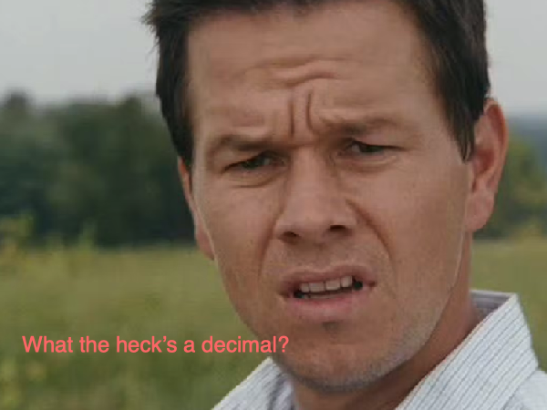
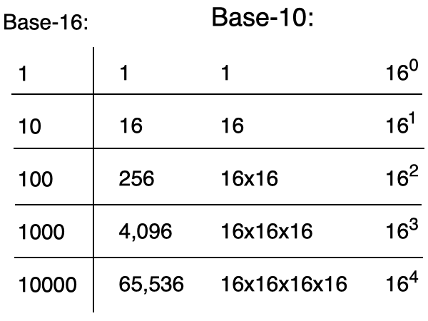
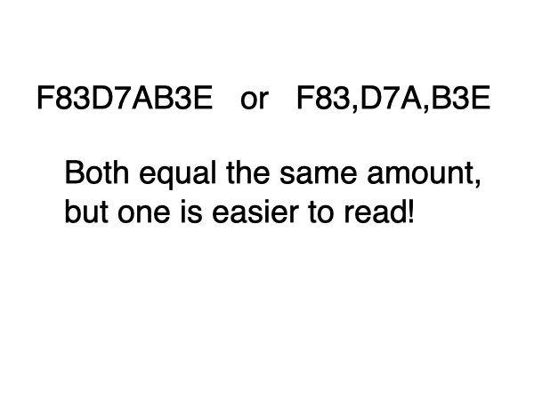
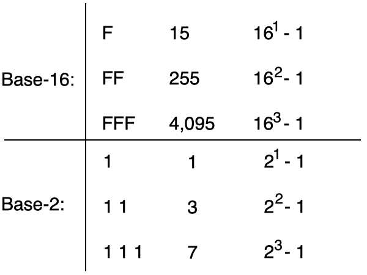
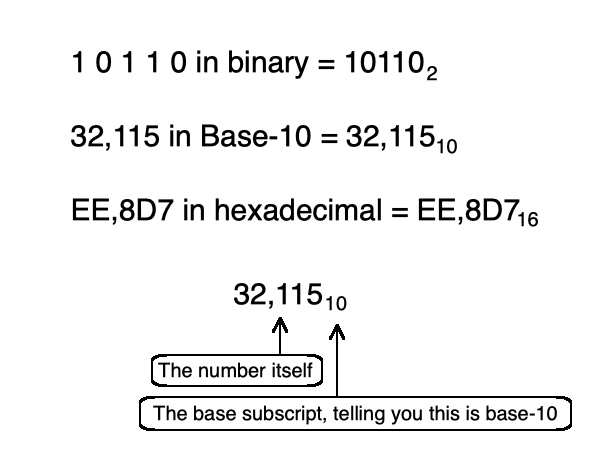
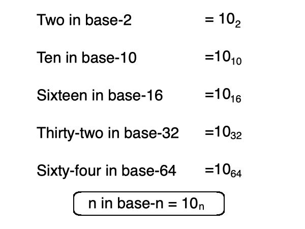

you smart good
Programming Concepts
Hexadecimal concepts
Before we move on to two-step conversions, let's take a moment to go over some hexadecimal concepts that we haven't discussed yet (and give you a break from math).

Remember what we found in binary, regarding sequence like:
1 0 0 or 1 0 0 0 0?
That's right, they equaled powers of 2! Hexadecimal does this as well, but with powers of 16.
For instance, 10 in hexadecimal equals 16 in base-10. 100 in hexadecimal equals 256 in base-10. Any time you see a single 1 followed by 0s, the base-10 equivalent will equal a power of 16.

Now what if we kept going with that Base-16 chart? what if we wanted to see 1000000000000? That's kinda messy, huh? How many zeros is that?
In Base-10, we commonly see commas. For instance, if we were writing 5834795026745, we could put 5,834,795,026,745. We can do exactly this in hexadecimal.
If we have 1000000000000 in hexadecimal, we can write 1,000,000,000,000. This makes it significantly easier to read!
Just like in Base-10, the commas do not have any sort of mathematical significance. They are only there for readability. They do not change the sequence in any way.

Here's another idea that is similar to something we found in binary.
Remember what would happen when we had a sequence like
1 1 1 1? It would be a power of 2 minus one.
This happens when every column has the largest possible symbol.
1 1 1 1 is 15, or 24-1.
This also works with hexadecimal, but a little differently. In hexadecimal, 1 is not the largest symbol. F is. This means, if we have a hexadecimal sequence containing only Fs, then the sequence will equal a power of 16 minus 1.
For instance, FFF equals 4,095, or 163-1.

We spend a lot of time saying things like, "110 in base-16" or "110 in Base-10" or "110 in base-2," but there is actually a shorter way to make the bases known.
A base subscript is an identifier placed after the number to show what base the number is in. It will appear as a smaller number in a lower position.
For instance, if you wanted 110 in base-2, it would appear as: 1102
110 is the sequence of numbers we are working with, and the 2 is the base that the sequence appears in.
So if you want to see F,32D in hexadecimal, it could appear as: F,32D16
Similarly to commas, the subscript does not change the value of the known number, it is there to let us know what base we are working in.

Here's another one for you that you may have already noticed . . .
How do you write two in binary(base-2)? It's 10, right?
Now how do we write ten in base-10? It's 10, obviously . . . wait a second, do you see what I see?
One more. What is sixteen in hexadecimal (base-16)? Holy macaroni, it's 10!
That's right, when working in any base, the sequence to represent that base is 10.
For instance, if we are working in base-32, to create the value of thirty-two, it is: 1032
To create the value of sixty-four in base-64, it is: 1064
